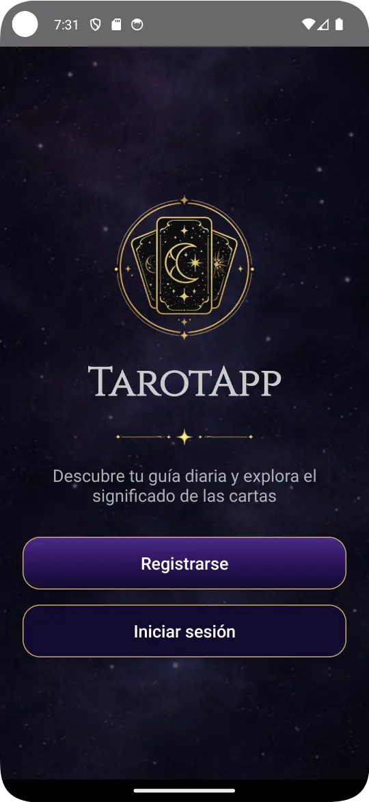
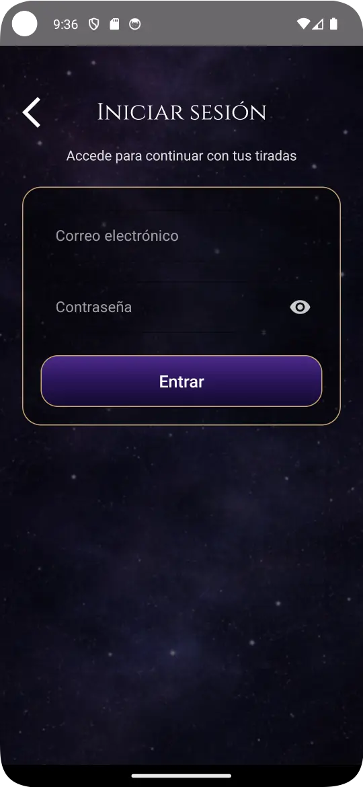
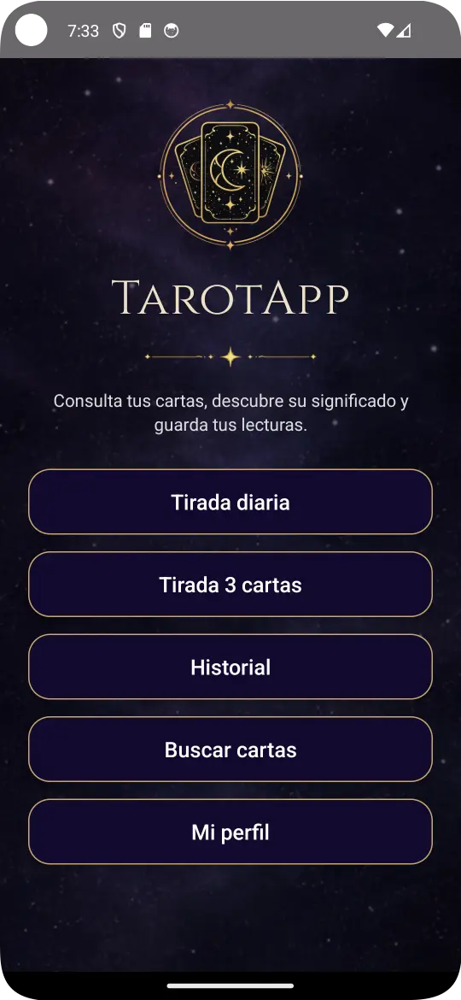
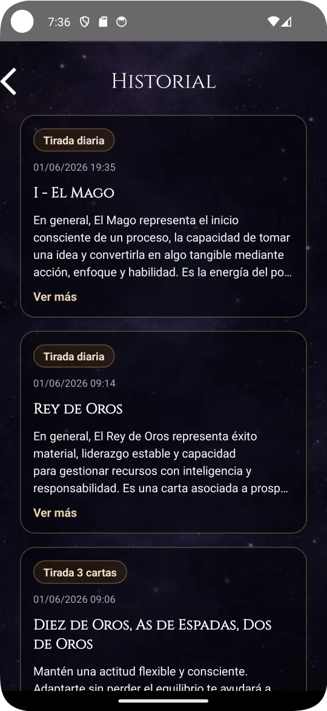
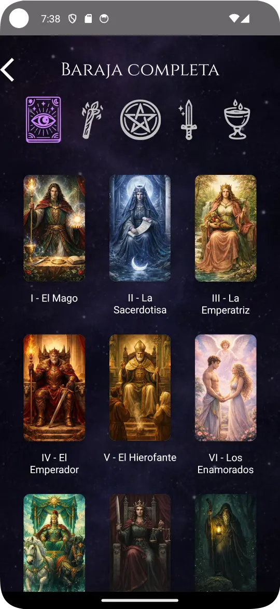
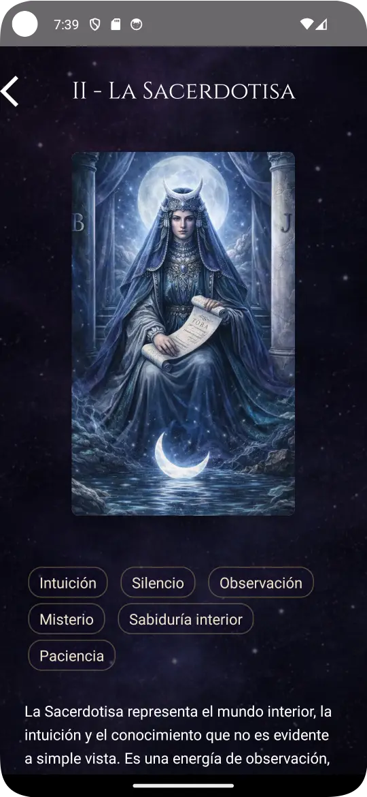

TarotApp
Aplicación Android de tarot con tiradas personalizadas, historial de lecturas, perfil de usuario y contenido dinámico.
Proyecto desarrollado en Kotlin como proyecto final del ciclo DAM. La aplicación combina arquitectura MVVM, persistencia local con Room, sincronización remota con Supabase y carga de datos mediante archivos JSON.
Incluye tirada diaria, tirada de tres cartas, historial sincronizado, baraja completa y personalización basada en la fecha de nacimiento.
Autenticación de usuarios
La aplicación cuenta con pantalla inicial, registro e inicio de sesión. Cada usuario dispone de su propio perfil y de un historial de lecturas asociado.
El sistema fue desarrollado en Kotlin utilizando Room Database para el almacenamiento local y Supabase para la sincronización de datos. La validación de credenciales se realiza desde la propia lógica de la aplicación.
- Registro e inicio de sesión.
- Persistencia local con Room.
- Sincronización con Supabase.
- Perfil e historial asociados a cada usuario.


Menú principal
Desde el menú principal el usuario puede acceder a todas las funcionalidades de la aplicación. La navegación se realiza mediante botones que permiten consultar las distintas secciones de forma sencilla e intuitiva.
- Tirada diaria interactiva.
- Tirada de tres cartas.
- Historial de lecturas.
- Baraja completa.
- Perfil de usuario.
Este diseño centraliza todas las funcionalidades principales en una única pantalla, permitiendo acceder rápidamente a cada sección desde un único punto de navegación.

Sistema de tiradas
La aplicación incluye dos tipos de tiradas: una tirada diaria de una carta y una tirada de tres cartas (pasado, presente y futuro). El usuario puede realizar la consulta con o sin pregunta personalizada.
Para generar las respuestas desarrollé un sistema de reglas que adapta la interpretación según la carta obtenida, el tipo de tirada y el contexto de la consulta. Esto permite ofrecer lecturas más personalizadas y coherentes con cada consulta.
- Selección aleatoria de cartas.
- Pregunta personalizada opcional.
- Interpretaciones dinámicas según la consulta.
- Palabras clave asociadas a cada carta.
- Consejos personalizados.
- Resultado guardado en el historial.
Historial de lecturas
Las lecturas realizadas se almacenan en un historial para que el usuario pueda consultarlas posteriormente.
La persistencia de datos se implementa mediante Room Database para el almacenamiento local y Supabase para la sincronización remota, permitiendo conservar la información asociada a cada usuario.
- Guardado automático de lecturas.
- Consulta de tiradas anteriores.
- Almacenamiento local mediante Room Database.
- Sincronización remota con Supabase.
Esta funcionalidad permite acceder rápidamente a lecturas anteriores desde la propia aplicación.

Baraja completa
La aplicación incluye una baraja completa con imágenes, palabras clave, significados y descripciones asociadas a cada carta. Toda la información se almacena en archivos JSON, lo que facilita su mantenimiento y la incorporación de nuevas cartas.
La navegación por la baraja se implementa mediante RecyclerView, permitiendo consultar rápidamente las cartas disponibles y acceder a su información detallada.
- Listado completo de cartas.
- Filtros por tipo de carta.
- Vista detallada de cada carta.
- Información cargada desde archivos JSON.


Perfil y personalización
El perfil permite consultar y actualizar la información personal del usuario, incluyendo nombre, correo electrónico y fecha de nacimiento. Los datos se almacenan localmente y pueden sincronizarse con la base de datos remota.
A partir de la fecha de nacimiento, la aplicación calcula automáticamente el signo zodiacal y el arcano personal, mostrando información personalizada dentro de la experiencia de usuario.
- Consulta y edición de perfil.
- Actualización de datos personales.
- Cierre de sesión y eliminación de cuenta.
- Cálculo automático del signo zodiacal.
- Cálculo automático del arcano personal.
- Personalización basada en la fecha de nacimiento.
Retos técnicos y soluciones
Durante el desarrollo de TarotApp fue necesario combinar distintas tecnologías para gestionar usuarios, tiradas, historial y contenido personalizado dentro de una misma aplicación.
- Implementar una arquitectura MVVM para organizar el proyecto.
- Combinar Room y Supabase para la persistencia local y remota de los datos.
- Desarrollar un motor de reglas capaz de adaptar las interpretaciones al contexto de la consulta.
- Gestionar una baraja completa de cartas mediante archivos JSON y filtros dinámicos.
- Diseñar interfaces orientadas a ofrecer una experiencia visual coherente y sencilla de utilizar.
Estos retos permitieron desarrollar una aplicación completa, combinando persistencia local y remota, gestión de contenido dinámico y una interfaz adaptada a dispositivos Android.